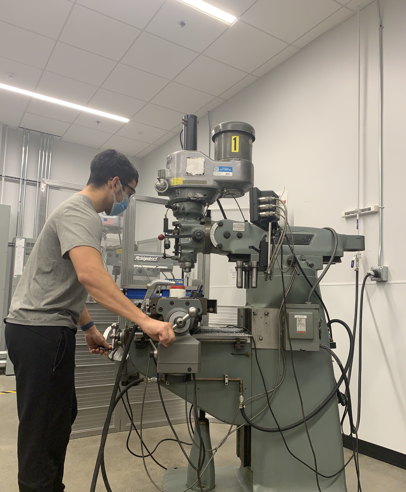

Bedside Cable holder
I got tired of picking up my cables off the floor so I decided to make an attchment for my bedside table
The initially concept was intended to just hold two phone chargers, but then I decided to be a bit more ambitious and accommodate two Apple watch chargers.
This project required measuring, dimensioning, CAD, 3D printing, and touch ups in the machine shop

To this day, I still uphold the learn by doing motto from Cal Poly.
SUV Platform Bed

I planned on going on a road trip to go camping with my girlfriend, but she wasn't too keen on tent camping. So like a good boyfriend I compromised and decided to make something. I got creative and decided to make a three part design platform bed to sleep on with have accessible storage space beneath. The legs are even made of threaded pipe so that once the platform is removed is can be stored parallel to a wall without the legs protruding.
The back half is separate so that I can fold my seats up and still keep the rear part in place, and the front half has two sections so that I can easily access storage deeper underneath the platform. A real bonus is that the platform has anchors that I secured to the car for safe storage that's out-of-sight.
Coding with Python and Pandas
I started learning python 2 in 2016 on Codecademy, but didn't get to really hone in this skill I developed until recently. In lieu of the COVID-19 pandemic, I had some extra time to re-take and complete the free Codecademy course online. Since then I've gotten to apply my coding skills at work for file renaming, data extraction, and data analysis. To practive and devlop my coding abilities further, I do practice problems on Leetcode and watch videos on Pandas.
Other learning
I am all about personal growth so I enjoy reading books and recently I have been trying to learn more about the stock market. Some books I've recently read that you can talk to me about are The Defining Decade by Dr. Meg Jay, Outliers by Malcolm Gladwell, Scrum by Jeff Sutherland, and Unshakeable by Tony Robbins.